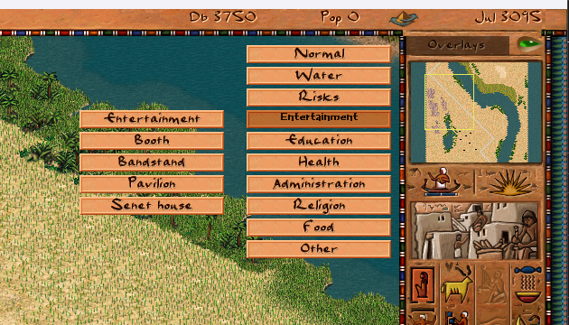

Overlay Menu Goes Script-Driven

The overlay menu — the dropdown that lets players switch between city views like Water, Health, Religion, and Food — has been fully migrated from C++ to JavaScript. This continues the ongoing effort to move UI logic out of the engine and into hot-reloadable scripts.
What Changed
- Menu drawing, hover detection, and submenu expansion now live in
ui_overlay_menu.js - Category and overlay lists previously hardcoded in C++ structs (
overlay_submenu_t,overlay_menu_t) are now defined in script — and removed fromoverlay_menu.cpp - Overlay titles are resolved from
overlays.jstitle keys (#overlay_*) in each localization file instead of the old__city_overlay_titlestring table; all supported languages updated - Menu is opened as a JS modal window via the event system and closed on Escape or right-click
- Positioning uses
sw()-based anchoring instead of a viewport-offset C++ binding; mouse hit-testing is now widget-relative
Before: C++ Config Structs
Previously the menu categories and their overlay lists were hardcoded in overlay_menu.cpp as static arrays of overlay_submenu_t structs. Adding a new overlay category or reordering entries required a recompile. Localization was tied to a fixed string table index, making it awkward to add languages.
After: JS Event Handlers
The menu is now a regular script-configured widget. Categories and their overlay IDs are plain JS arrays. Opening the menu fires an event; the script listens and renders the popup in place. The C++ side keeps only a thin window shell — no layout, no data, no state.
emit event_show_window{ id:"overlay_menu_window" }
Submenu state, hover tracking, and overlay selection all happen in script. The overlay title for the sidebar is loaded into city_overlay.title_text so existing C++ callers still work without changes.
Localization
All overlay names now use the #overlay_* key convention, consistent with the rest of the localization system. Category labels use #overlay_menu_* keys. All twelve language files have been updated, removing duplicate group-14 entries that had accumulated over time.
Why This Matters
With the menu in script, modders can add custom overlay categories for new building types without touching engine code. The same hot-reload workflow that already works for building windows and mission screens now applies to the overlay switcher — edit the JS file, press F5 in-game, see the result.